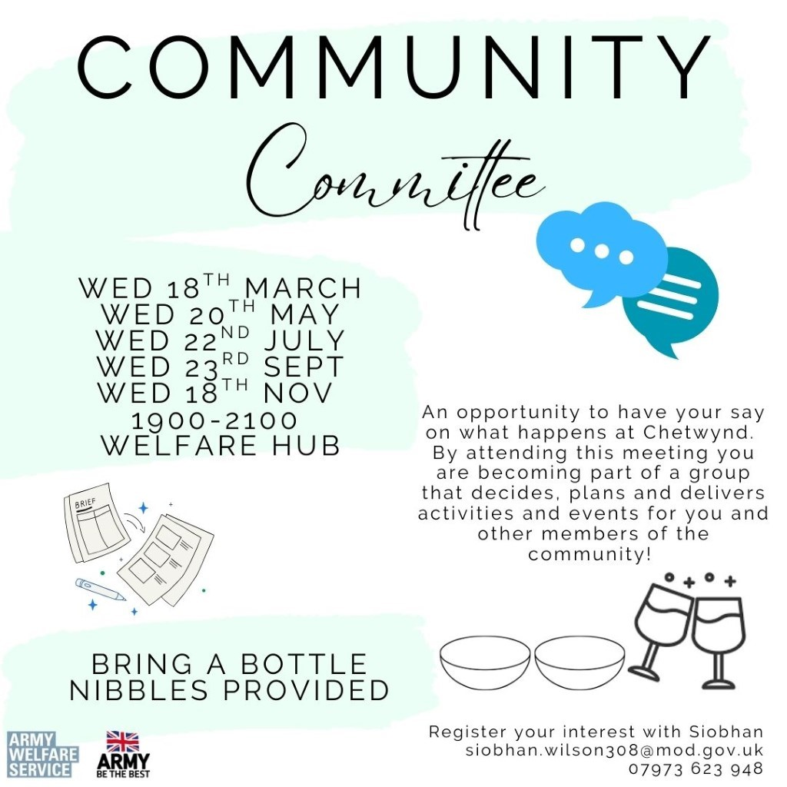
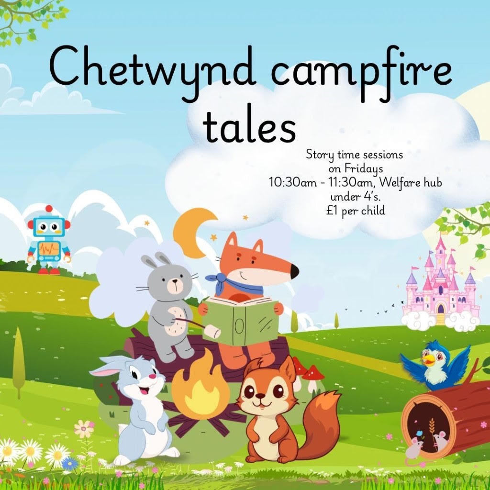
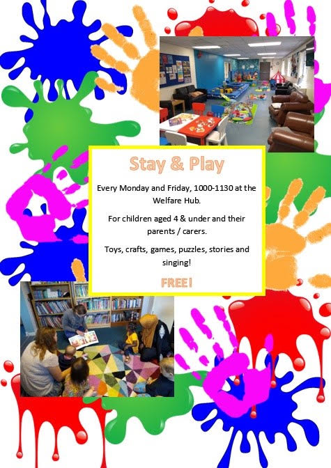
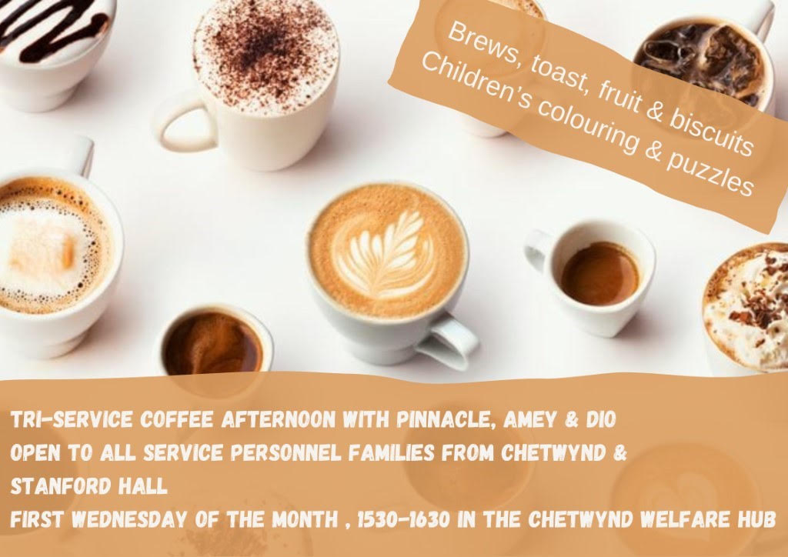
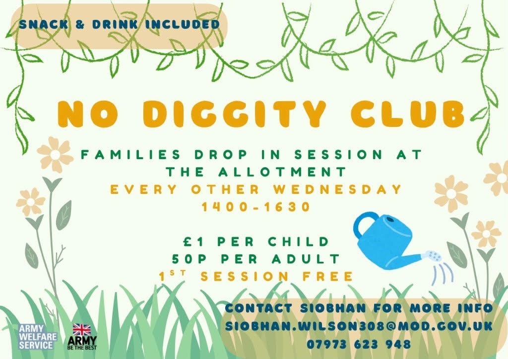
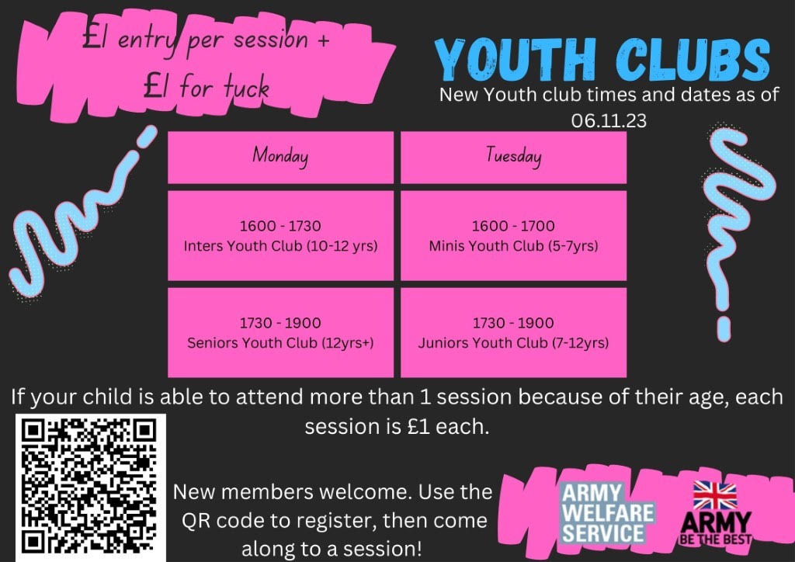

Community Allotment BBQ
Saturday 19 September 2026
Contact Siobhan for further information.
Chetwynd Barracks offers a range of regular activities, clubs and sessions for Service personnel, families and children within the community.
The following activities take place regularly throughout the week. Please check with the relevant organiser for further information before attending.
1000–1130
Children aged 4 and under, accompanied by parents or carers.
1600–1730
Ages 10–12.
1730–1900
Ages 11–16.
First Monday of every month.
Pinnacle / Amey.
1600–1700
Ages 5–7.
1730–1900
Ages 7–11.
Second Wednesday of every month.
Every other Wednesday, 1400–1630.
Over lunch. Targeted intervention including deployment support, dealing with anxiety and preventative maintenance.
First Thursday of every month, 1530–1630.
1030–1130
Ages 4 and under, accompanied by carers or parents.
Keep an eye out for these upcoming community events.
Saturday 19 September 2026
Contact Siobhan for further information.
Friday 6 November 2026
Contact SSgt Serucebe for further information.
Find out more about activities and events happening in the community. Select an event below to view further information.





